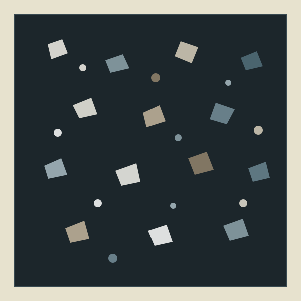

1. Vì sao gạch Terrazzo 80x80 trở thành chuẩn mực lót sàn năm 2026?
Gạch Terrazzo (đá mài hạt thạch anh) thế hệ mới ứng dụng công nghệ in kỹ thuật số đa tầng kết hợp hạt tinh thể chìm trên nền xương đá Porcelain. Thay vì khổ 30x30 hay 60x60 truyền thống, các văn phòng kiến trúc và chủ nhà xây mới hiện nay ưu tiên khổ 800×800 mm cho toàn bộ mặt sàn căn hộ và nhà phố từ 20m² trở lên.
Khi giảm hơn một nửa số lượng đường ron trên sàn, không gian phòng khách liền bếp trông rộng và thoáng hơn rõ rệt. Đồng thời, gia chủ giảm được tối đa diện tích khe mạch xi măng — nơi thường tích tụ bụi mịn và ố màu sau 2–3 năm sinh hoạt.

"Mật độ hạt đá Terrazzo trên khổ 80x80 của DRAVIT được thiết kế theo tỷ lệ Venetian Seminato: 70% nền khoáng thạch mịn kết hợp 30% hạt đá thạch anh đường kính 3–8mm. Tỷ lệ này giúp mặt sàn có chiều sâu tự nhiên dưới ánh đèn 3000K–4000K mà không gây mỏi mắt trong không gian sinh hoạt gia đình."
KS. Trịnh Hoài Nam — Trưởng bộ phận R&D Vật liệu Gốm sứ DRAVIT
2. Tiêu chuẩn kỹ thuật bắt buộc: Xương Porcelain, Độ nhám R10 & Cạnh mài Rectified
Trên thị trường hiện có hai dòng gạch in họa tiết Terrazzo dễ gây nhầm lẫn: dòng Porcelain xương đá nén thủy lực và dòng Ceramic xương đất sét đỏ giá rẻ. Dưới đây là 5 chỉ số kỹ thuật trên phiếu kiểm định xuất xưởng giúp chủ đầu tư và nhà thầu phân biệt chính xác:
| Chỉ số kiểm định | Terrazzo Porcelain DRAVIT (Chuẩn) | Gạch Ceramic Thông thường | Tác động thực tế sau 3–5 năm sử dụng |
|---|---|---|---|
| Xương gạch & Độ hút nước (E) | Porcelain E ≤ 0,5% (ISO 13006 BIa) | Ceramic E > 6% – 10% (xương đất nung) | Chống thấm ngược tuyệt đối, không ố đen chân ron nhà tắm |
| Chống trượt (DIN 51130) | Cấp R10 (DCOF ≥ 0,42) | Cấp R9 hoặc tráng men bóng R8 | Đi chân ướt an toàn, bảo vệ trẻ nhỏ & người lớn tuổi |
| Độ dày & Lực uốn gãy | Dày 10 mm · Lực uốn ≥ 1.500 N | Dày 7,5 – 8 mm · Lực uốn ~600 N | Chịu tải trọng tủ bếp đá, đảo bếp và mật độ đi lại cao |
| Cạnh gạch (Rectified) | Mài phẳng CNC 90° (Sai số ±0,2mm) | Cạnh ép khuôn tự nhiên (vát bầu) | Đi đường ron siêu mảnh 1,5mm – 2,0mm phẳng khít |
| Chống mài mòn men (PEI) | Cấp PEI IV (12.000 vòng quay) | Cấp PEI II – III | Không trầy xước hay mờ hạt đá khi kéo bàn ghế thường xuyên |
 01 · Macro Bề Mặt
01 · Macro Bề Mặt
 02 · Cạnh Mài 90°
02 · Cạnh Mài 90°

03 · Xương Đá 10mm 04 · Thực Tế Lát Sàn
04 · Thực Tế Lát Sàn
Đánh giá khách quan: Ưu điểm & Hạn chế cần lưu ý của gạch Terrazzo 80x80
- Che giấu bụi & tóc cực tốt: Họa tiết hạt đá đa sắc giúp mặt sàn luôn trông sạch sẽ giữa các lần lau dọn.
- Không gian liền mạch: Giảm 55% đường ron, đặc biệt hợp với phòng khách thông bếp từ 20m² – 60m².
- An toàn chống trượt R10: Bề mặt Matt mịn không giữ bẩn như gạch nhám sần R12 nhưng vẫn chống trượt nước tốt.
- Độ bền trên 25 năm: Xương đá Porcelain không bay màu, không bong men như gạch tráng men mỏng.
- Không hợp phòng tắm quá nhỏ (< 5m²): Viên gạch 80x80 lớn khó tạo độ dốc thoát sàn 4 hướng về phễu thu nước.
- Trọng lượng nặng (14 kg/viên): 1 thùng 3 viên nặng 42kg, cần thợ có hít kính chân không và bay răng cưa để căn chỉnh.
- Đòi hỏi nền cán phẳng ±2mm: Nền lồi lõm sẽ gây hiện tượng bộp gạch hoặc chênh mép góc.
- Chi phí vật tư phụ: Bắt buộc dùng keo dán gạch C2 (~65.000đ/m² tiền keo) thay vì hồ dầu xi măng.
3. Top 4 mẫu gạch Terrazzo 80x80 thực tế bán chạy nhất tại Kho DRAVIT
Dưới đây là 4 mã gạch Terrazzo khổ 800×800 mm có lượng xuất kho cao nhất cho các dự án nhà phố, biệt thự và căn hộ cao cấp trong năm 2026:


Nhận 02 mẫu gạch Terrazzo cắt thực tế (10×10cm) gửi tận công trình miễn phí
Đặt mẫu gạch thật dưới ánh đèn thực tế tại công trình để kiểm tra độ nhám R10 và so màu sơn tường trước khi chốt khối lượng. Kỹ sư DRAVIT gửi kèm bảng dự toán số thùng + keo dán gạch qua Zalo trong 15 phút.
4. Bảng báo giá, quy cách đóng thùng & công thức tính số viên chuẩn
Tại hệ thống DRAVIT, mọi mã gạch đều được niêm yết song song 2 đơn vị: Đơn giá / m² (để chủ nhà và KTS so sánh dự toán) và Đơn giá / viên giao dịch (để xuất kho chính xác theo thùng nguyên, không cắt lẻ viên).
| Mã SKU | Dòng gạch & Bề mặt | Giá / m² | Giá / Viên (0,64m²) | Giá / Thùng (1,92m²) | Tác vụ BOQ |
|---|---|---|---|---|---|
| DRV-TRZ80 | Terrazzo Kem hạt mịn (Matt R10 · Lô V1) | 385.000đ | 246.400đ/viên | 739.200đ/thùng (42kg) | |
| DRV-TRZ80G | Terrazzo Xám khói xi măng (Nhám R10 · Lô V2) | 395.000đ | 252.800đ/viên | 758.400đ/thùng (42kg) | |
| DRV-TRZ80W | Terrazzo Trắng vân hạt mịn (Matt R9 · Lô V1) | 410.000đ | 262.400đ/viên | 787.200đ/thùng (42kg) | |
| DRV-TRZ80B | Terrazzo Đen thạch anh hạt lớn (Matt R10 · Lô V1) | 425.000đ | 272.000đ/viên | 816.000đ/thùng (42kg) |
5. Quy trình 4 bước thi công đường ron 1,5mm & keo dán gạch C2
Để sàn gạch Terrazzo 80x80 phẳng tuyệt đối, không bị bộp rỗng hay nứt gãy sau thời gian sử dụng, đội thi công cần tuân thủ nghiêm ngặt quy trình 4 bước kỹ thuật sau:
Kiểm tra cốt nền & Trải thử cùng lô Shade
Cốt nền vữa cán phải đạt độ phẳng sai số ≤ 2mm trên thước 2m, khô ráo và sạch bụi. Kiểm tra tất cả vỏ thùng trùng mã Shade V1/V2 và lát cùng chiều mũi tên dưới đáy gạch.
Trét keo 2 mặt (Kỹ thuật Back-buttering)
Dùng bay răng cưa 8–10mm kéo keo C2 nghiêng 60° trên nền sàn, đồng thời phết 1 lớp keo mỏng 1–2mm phủ kín mặt lưng viên gạch 80x80 để đạt độ phủ keo 100% không bọng khí.
Khóa phẳng mép bằng Ke cân bằng 1,5mm
Cài tối thiểu 2 chốt ke cân bằng 1,5mm trên mỗi cạnh viên gạch (cách góc 5cm), đóng nêm bằng kìm chuyên dụng và gõ búa cao su trắng từ tâm ra biên để triệt tiêu độ vênh mép.
Tháo ke & Bơm keo chà ron chống thấm
Sau 24 giờ khi keo dán gạch đã đóng rắn hoàn toàn, dùng búa cao su gõ ngang chiều mạch để tách chốt ke, hút sạch bụi khe 1,5mm và bơm keo chà ron Epoxy chống ố bẩn.
6. Câu hỏi thường gặp về gạch Terrazzo 80x80 (FAQ)
1. Gạch Terrazzo 80x80 có bị trơn trượt khi dính nước xà phòng trong nhà tắm không?
Trả lời: Không bị trơn nếu bạn chọn đúng dòng bề mặt Matt nhám cấp R10 theo tiêu chuẩn DIN 51130 của Đức (như mã DRV-TRZ80 và DRV-TRZ80G). Hệ số ma sát động DCOF ≥ 0,42 giữ độ bám chân an toàn ngay cả khi sàn ướt nước xà phòng, trong khi bề mặt vẫn đủ mịn để lau sạch bằng cây lau nhà thông thường.
2. Một thùng gạch Terrazzo 80x80 đóng bao nhiêu viên và lát được bao nhiêu m²?
Trả lời: Quy cách đóng gói chuẩn của gạch Terrazzo 80x80 tại DRAVIT là 1 thùng = 3 viên = 1,92 m² (1 viên = 0,64 m²), trọng lượng trung bình 42 kg/thùng. Khi tính khối lượng mua, nên cộng thêm 5% hao hụt cắt gạch chân tường đối với phòng vuông vức hoặc 8–10% nếu lát chéo góc.
3. Phòng diện tích nhỏ dưới 15m² có nên lát gạch Terrazzo 80x80 không?
Trả lời: Với phòng ngủ nhỏ dưới 15m² hoặc nhà vệ sinh diện tích 4–6m² cần đánh dốc thoát sàn về phễu thu nước, kỹ sư DRAVIT khuyên bạn nên chọn phiên bản cùng vân khổ 60x60cm (4 viên = 1,44 m²) để hạn chế cắt gạch vụn và dễ tạo độ dốc thoát nước hơn.
4. Tại sao gạch Porcelain Terrazzo 80x80 bắt buộc dùng keo dán gạch thay vì xi măng hồ dầu?
Trả lời: Xương gạch Porcelain có độ hút nước cực thấp E ≤ 0,5%, không có lỗ rỗng mao dẫn để hồ dầu xi măng bám dính cơ học. Sử dụng hồ dầu truyền thống sẽ dẫn tới bong rộp sau 1–2 năm. Bắt buộc dùng keo dán gạch polymer cấp C2 (ISO 13007) kết hợp trét keo 2 mặt.
5. Showroom DRAVIT có sẵn mẫu gạch Terrazzo thực tế để kiểm tra dưới ánh đèn không?
Trả lời: Có. Showroom DRAVIT tại KĐT Sala Thủ Thiêm trưng bày sẵn toàn bộ 28 mẫu gạch Terrazzo khổ 60x60, 80x80 và 60x120 dưới hệ thống đèn chiếu 3000K (vàng ấm) và 4000K (trung tính), hoặc bạn có thể đăng ký nhận 2 mẫu cắt thực tế gửi tận chân công trình.